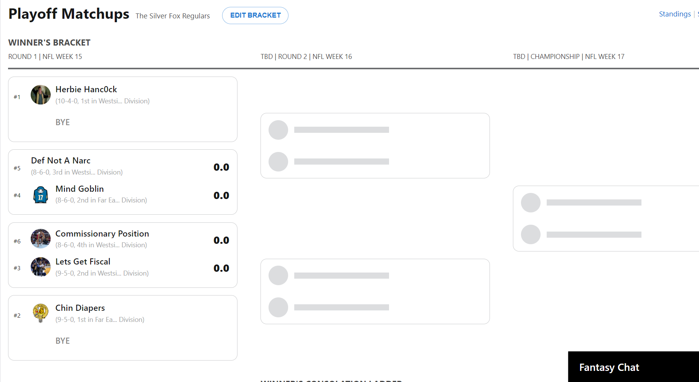

Silver Fox Regulars
Week 14 Commissioner Report

| Big Dick of the Week | Dog of the Week | Bad Beat | |
|---|---|---|---|
| Team | Def Not a Narc | Fight for 2nd | Jeffersonian Republic |
| Points | 158 | 103 | 4th Highest |

Week 14 Recap - Playoffs!
Fourteen weeks later and time has finally arrived, playoffs baby! What a whirlwhind of a final week. There's a lot to touch on which I'll get into below. But for 6 us we're off the hook on selling cookies and looking forward to a chance to cash in. Zac, Justin, Ryan and Conor vying for their first league championship; while Ben and myself look to add another to the mantle. Probably the strongest loser's bracket we've seen as 3 of the 4 teams finished week 14 with the top 4 highest points of the week. Let the games begin.
-
I'll also mention Ben finally posted his video. I had to do so much teeth pulling I should change careers and become a dentist. For those who haven't seen it I encourage you to check out his instagram post. Some potential comments you can leave:
- What you lack in speed you did not make up for in strength
- I guess it's good bases are 90ft rather than 40 yards
- We know where Braxton gets his speed from
-
The Big Dick of the Week goes to Conor with one of the grittiest fantasy performances I have ever seen. First, on Saturday morning ESPN's system sent out a stat correction that revoked his win and automatic playoff birth. With new pressure to win week 14 he adds Jerrick Mckinnon off waivers Saturday night. Along with waiver wire adds of Dre Greenlaw and KC defense he got a combined 68 points from waivers. Locked in the win, locked in BDOW, and locked in a playoff spot. *Chef's Kiss * Additionally the BDOW from last week got pushed due to Ben's shenanigans so $20 coming at you.
-
Another Dog of the week to Smith. Consistency. Is. Key.
-
Tough playoff misses from Petty and Kellen. Both had really strong years in fantasy finishing the regular season with 3rd and 4th most points for respectively. But sometimes it's better to be lucky than good.
-
A big matchup between Ben and Ryan settled the 1st place seed. What started off as a lock with a 200 point lead turned into an artificial butt clencher.
-
Kevin still fighting with a solid waiver add of Engram. Love to see it.
-
Lastly Justin pulled out another rabbit with a win scoring 115. Hopefully it stays that way for round one.
